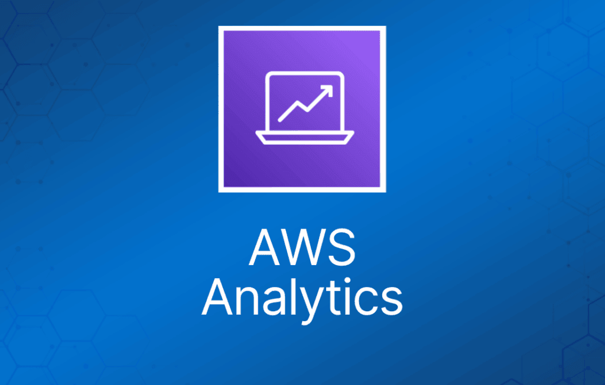

AWS 提供了多种分析（Analytics）服务，包括：
- Amazon Athena
- Amazon EMR
- Amazon CloudSearch
- Amazon Opensearch Service
- Amazon Kinesis
- Amazon QuickSight
- Amazon Data Pipeline
- AWS Glue
- AWS Lake Formation
- Amazon MSK
本文重点介绍 Athena、EMR、Glue 和 Kinesis，因为它们是 AWS Certified Cloud Practitioner 考试中最常出现的服务。你也可以点击其他服务的链接，了解它们在高层面的用途。
Amazon Elastic Map Reduce
Amazon EMR 是一项 Web 服务，让企业、研究人员、数据分析师和开发者能够轻松且低成本地处理海量数据。
EMR 使用托管的 Hadoop 框架，运行在 Amazon EC2 和 Amazon S3 之上。
用于处理海量数据的托管 Hadoop 框架。
同时支持 Apache Spark、HBase、Presto 和 Flink。
最常用于日志分析、金融分析，或提取、转换和加载（ETL）类工作。
Step 是一个编程任务，用于对数据执行某种处理（例如统计单词数）。
Cluster 是由 EMR 预配置的一组 EC2 实例，用来运行你的 Step。
EMR 使用 Apache Hadoop 作为其分布式数据处理引擎。Hadoop 是一个开源的 Java 软件框架，支持在由普通硬件组成的大型集群上运行数据密集型分布式应用。
EMR 也是部署 Apache Spark 的好地方。Spark 是一个开源的分布式处理框架，面向大数据工作负载，利用内存缓存和优化的查询执行。
你还可以启动 Presto 集群。Presto 是一个开源的分布式 SQL 查询引擎，专为对大型数据集进行快速分析查询而设计。
EMR 会在同一个 Amazon EC2 可用区（Availability Zone）中启动给定集群的所有节点。
你可以通过 AWS Management Console、命令行工具、SDK 或 EMR API 来访问 Amazon EMR。
使用 EMR 时，你可以访问底层操作系统（可以 SSH 登录进去）。
Amazon Athena
Amazon Athena 是一项交互式查询服务，让你可以使用标准 SQL 轻松分析 Amazon S3 中的数据。
Athena 是 serverless 的，因此无需管理任何基础设施，你只需为运行的查询付费。
Athena 使用简单——只需指向 Amazon S3 中的数据，定义 schema，然后就可以用标准 SQL 开始查询。
Amazon Athena 使用 Presto，完整支持标准 SQL，并兼容多种标准数据格式，包括 CSV、JSON、ORC、Apache Parquet 和 Avro。
Amazon Athena 非常适合快速的 ad-hoc 查询，并可与 Amazon QuickSight 集成实现便捷的可视化；同时它也能处理复杂分析，包括大型 join、窗口函数和数组。
Amazon Athena 使用托管的 Data Catalog 来存储你为 Amazon S3 中数据创建的数据库和表的信息及 schema。
AWS Glue
AWS Glue 是一项全托管、按使用量付费的提取、转换和加载（ETL）服务，可以自动完成为分析做数据准备时那些耗时的步骤。
AWS Glue 通过 Glue Data Catalog 自动发现并剖析数据，推荐并生成 ETL 代码，将源数据转换为目标 schema。
AWS Glue 在全托管、可横向扩展的 Apache Spark 环境中运行 ETL 作业，将数据加载到目的地。
AWS Glue 还允许你搭建、编排和监控复杂的数据流。
在 AWS Management Console 中点击几下即可创建并运行 ETL 作业。
使用 AWS Glue 来发现数据的属性、转换数据，并为分析做好准备。
Glue 可以自动发现存储在 Amazon S3 数据湖中的结构化和半结构化数据、Amazon Redshift 数据仓库中的数据，以及运行在 AWS 上的各种数据库。
它通过 Glue Data Catalog 提供数据的统一视图，可供 Amazon Athena、Amazon EMR 和 Amazon Redshift Spectrum 等服务进行 ETL、查询和报表。
Glue 会自动为 ETL 作业生成 Scala 或 Python 代码，你可以用熟悉的工具进一步定制。
AWS Glue 是 serverless 的，因此无需配置和管理任何计算资源。
数据分析与查询的使用场景
Amazon Athena 这类查询服务、Amazon Redshift 这类数据仓库，以及 Amazon EMR 这类高级数据处理框架，分别满足不同的需求和使用场景。
对于企业报表和商业智能工作负载，尤其是涉及包含多个 join 和子查询的极复杂 SQL 的场景，Amazon Redshift 提供最快的查询性能。
与本地部署相比，Amazon EMR 让运行 Hadoop、Spark、Presto 等高度分布式处理框架变得简单且经济高效。Amazon EMR 非常灵活——你可以运行自定义应用和代码，并定义具体的计算、内存、存储和应用参数来优化分析需求。
Amazon Athena 提供了对 S3 中数据运行 ad-hoc 查询最简单的方式，无需搭建或管理任何服务器。
下表展示了几个 AWS 查询和分析服务的主要使用场景及适用情况：
| AWS 服务 | 主要使用场景 | 何时使用 |
| Amazon Athena | 查询 | 直接对 Amazon S3 中的数据运行交互式查询，无需担心数据格式或基础设施管理。可与 Amazon RedShift 等其他服务配合使用 |
| Amazon RedShift | 数据仓库 | 从多个来源拉取数据，进行格式化和组织后存储，并支持生成业务报表的复杂高速查询。 |
| Amazon EMR | 数据处理 | Hadoop、Spark、Presto 等高度分布式处理框架。为机器学习、图分析、数据转换、流数据等应用运行各种横向扩展的数据处理任务。 |
| AWS Glue | ETL 服务 | 将数据转换并移动到各种目的地。用于为分析准备和加载数据。数据源可以是 S3、RedShift 或其他数据库。Glue Data Catalog 可被 Athena、EMR 和 RedShift Spectrum 查询 |
Amazon Kinesis
Amazon Kinesis 让你可以轻松收集、处理和分析实时流数据，从而及时获得洞察并快速响应新信息。
一组用于处理各类数据流的服务。
数据以 “shard” 为单位进行处理。
Kinesis 服务共有四种类型，下面详细介绍。
Kinesis Video Streams
Kinesis Video Streams 让你可以轻松地将视频从联网设备安全地流式传输到 AWS，用于分析、机器学习（ML）和其他处理。
持久化存储、加密并索引视频数据流，并通过易用的 API 访问数据。
Producer 提供数据流。
默认存储数据 24 小时，最长 7 天。
Consumer 接收并处理数据。
一个流中可以有多个 shard。
支持使用 customer master key 通过服务器端加密（KMS）实现静态加密。
Kinesis Data Streams
Kinesis Data Streams 让你可以构建自定义应用，针对特定需求处理或分析流数据。
Kinesis Data Streams 支持对流式大数据进行实时处理。
Kinesis Data Streams 适用于快速从数据 producer 移出数据，然后持续处理这些数据的场景。
Kinesis Data Streams 会存储数据，供应用稍后处理（这是与 Firehose 的关键区别，Firehose 直接将数据投递到 AWS 服务）。
常见使用场景包括：
- 加速日志和数据馈送的摄取。
- 实时指标和报表。
- 实时数据分析。
- 复杂流处理。
Kinesis Data Firehose
Kinesis Data Firehose 是将流数据加载到数据存储和分析工具最简单的方式。
捕获、转换并加载流数据。
可借助现有商业智能工具和仪表板实现近实时分析。
Kinesis Data Streams 可以作为 Kinesis Data Firehose 的数据源。
你可以配置 Kinesis Data Firehose 在投递数据之前先进行转换。
使用 Kinesis Data Firehose 无需编写应用或管理资源。
Firehose 可以在加载数据前对其进行批处理、压缩和加密。
Firehose 在将数据传输到目的地时，会跨三个 AZ 同步复制数据。
每个 delivery stream 最多存储数据记录 24 小时。
Kinesis Data Analytics
Amazon Kinesis Data Analytics 是处理和分析实时流数据最简单的方式。
可以使用标准 SQL 查询处理 Kinesis 数据流。
提供实时分析。
使用场景：
- 生成时间序列分析。
- 为实时仪表板提供数据。
- 创建实时告警和通知。
可快速编写并针对流数据源运行强大的 SQL 代码。
可以从 Kinesis Streams 和 Kinesis Firehose 摄取数据。
输出到 S3、RedShift、Elasticsearch 和 Kinesis Data Streams。
位于 Kinesis Data Streams 和 Kinesis Data Firehose 之上。